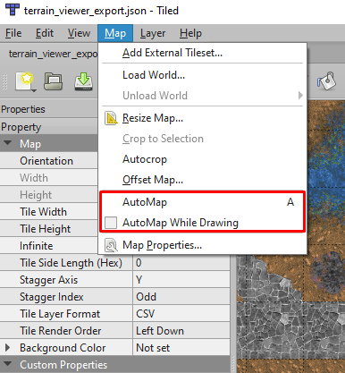
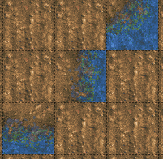
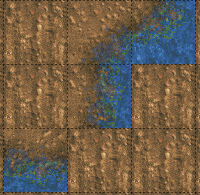
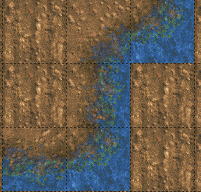
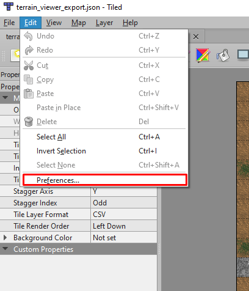
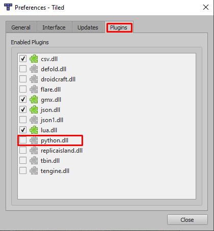
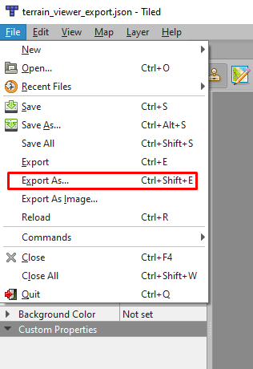
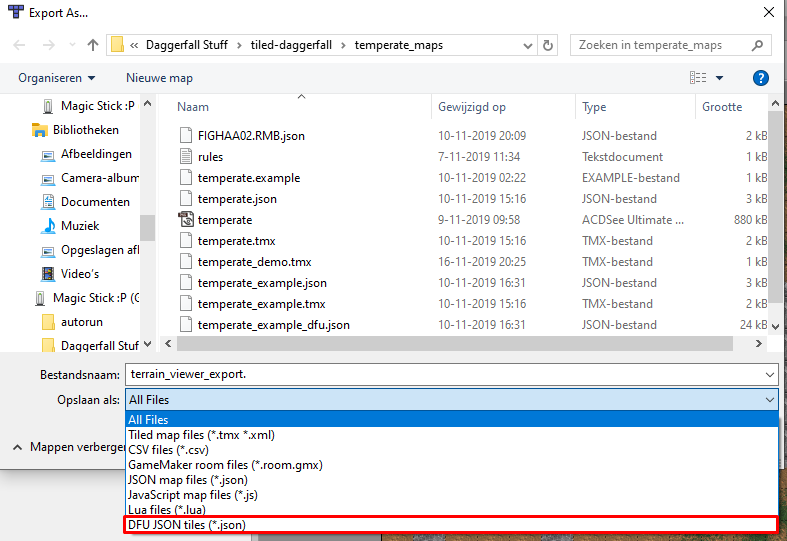

Basic setup to use Daggerfall terrain textures with Tiled's automapping feature
This is a collection of files to aid with the creation of new Daggerfall terrain layouts using Tiled's automapping features.
Daggerfall has 4 types of terrain: desert, mountain, swamp and temperate. This projects contains corresponding folders that have been set up to use Tiled's automapping features.
The folders follow this naming pattern: <terrain>_maps
These folders have two files in them:
The rules.txt is used by Tiled to load the files used for automapping. You can read more about it here: Tiled Automapping
The <terrain>.tmx file is a template that is configured to use the correct tileset and has the correct dimensions (16x16 tiles). It contains a single layer named 'terrain'. The files referenced in the rules.txt need that layer to exist in order to take effect.
If you want to create a new terrain, you can make a copy of this file and give it a new name or if you're familiar with Tiled, just load in the tileset (<terrain>.tsx) you want to use, create a new map and then save it to the appropriate <terrain>_maps folder. If you do create a new map, do NOT forget to rename the layer to 'terrain'.
When using a tileset in Tiled that has rules defined for automapping, there are two ways you can use it. See the screenshot below on how to access these:

Automapping might interfere with specific layouts you want to make because the rules find a different match than what you're trying to create. If this happens, disable 'Automap While Drawing' if active or do not press A while you are creating the layout you want. After the layout has been made, it's usually okay to press A again and map out other parts of your map.
If you made a copy of the <terrain>.tmx file, you can skip this preparation.
If you decided to create a new map file, use the flood fill (paint bucket) the 55th tile in the tileset. This is the farmland-tile which is rarely used for terrains so I have used this tile in the automapping rules as a filler tile. This means that the automapping rules will only replace matches patterns if they contain this farmland tile.
I'm keeping this example simple on purpose. The best way to get a feel for Automapping is to active the AutoMap While Drawing feature and start placing tiles on the map.

Pressing A once with the tiles set up like the example above will add tile 7-0 to the top-middle to connect the top-right and the middle tile.
Check out the result below:

Pressing A again with the additional tile 7-0 in place will add tile 5-0 to the bottom-middle

With 'AutoMap While Drawing' enabled, the above examples would be filled out automatically instead of having to hit 'A' manually each time.
ATTENTION WINDOWS USERS
Tiled on Windows has disabled Python scripting by default. In order to active Python scripting for Tiled, go the following link for Python 3.7.5 releases and download the Python version for the correct architecture.
Close Tiled, follow Python's installation instructions and after Python has been successfully installed, relaunch Tiled and go to Edit > Preferences:

A new window will appear with several tabs, select the Plugins tab and check for the Python plugin in the list:

Make sure the box next to python.dll is ticked. If there is something wrong, the plugin will display a Stop-sign instead of the tickbox. If the box is already ticked, you're good to go.
Go to your User folder and create a folder named '.tiled' and copy the file 'dfutiles.py' from the /scripts folder in this project to the .tiled folder.
If you are having trouble creating the folder, I've added a '.tiled' folder with the dfutiles.py script already in it. Copying that to your User folder should suffice to complete this step.
Start Tiled, open your map and choose File > Export As

You will get a file dialog window, in the Save as-section, select DFU JSON tiles (*.json) instead of All Files

Choose your filename and hit Save. This will create a JSON file that has a list of tile objects that you can copy and paste into your .RMB.json file that you got from Daggerfall Unity.
In the root folder of the project, you will find several .TSX files, these are the tilesets that are used in Tiled to paint the terrain. You will also find several .TMX files that follow a certain filename pattern:
These TMX files contain the patterns that are recognised by the Automapping function. You can open these files in Tiled to see how the patterns are defined. By hiding the layers named regions_input and regions_output you can see the input and output. By hiding the output_terrain layer, you can see the expected input pattern by itself.
The <terrain>_maps folders all have a file named rules.txt. This is the file that allows Tiled to apply the TMX files mentioned in the previous section as automapping rules. It simply contains the paths to the appropriate TMX files that define the automapping patterns.